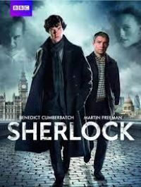

Merhaba, ben Merve Nur DALMIŞ. Şu anda üniversite okuyorum. Kitap okumayı severim ve frontend alanında kendimi geliştiriyorum.
Sherlock Holmes
Sherlock, Mark Gatiss tarafından televizyon için geliştirilen Sir Arthur Conan Doyle'ın aynı adı taşıyan romanlarına dayalı Birleşik Krallık televizyon dizisi. Dizinin 90 dakikalık ilk bölümü 25 Temmuz 2010 günü BBC One televizyon kanalında, "Mini-Dizi" olarak yayımlanmaya Mayıs ayında başladı.